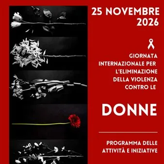

da dom 22 nov a sab 12 dic
25 novembre 2026 - Giornata internazionale per l'eliminazione della violenza contro le donne
Un programma di eventi e iniziative per sensibilizzare la cittadinanza e promuovere una cultura del rispetto e della non violenza: DAL 22 NOVEMBRE AL 2 DICEMBRE-Loggia Comunale Installazione delle opere: “Ogni posto vuoto ha un nome”, “Insieme in vetrina, uniti nel rispetto”…
 Indicazioni
Indicazioni
- Costi e prenotazioni
- Costo non indicato · Prenotazione non indicata
- Programma
- Programma da verificare. Apri la fonte ufficiale per orari e possibili aggiornamenti.
- In caso di maltempo
- Nessuna indicazione specifica pubblicata.
- Note
- Acquisito automaticamente dalla fonte.
L’EVENTO
Descrizione completa
Un programma di eventi e iniziative per sensibilizzare la cittadinanza e promuovere una cultura del rispetto e della non violenza: DAL 22 NOVEMBRE AL 2 DICEMBRE-Loggia Comunale Installazione delle opere: “Ogni posto vuoto ha un nome”, “Insieme in vetrina, uniti nel rispetto”
Allestimento delle vetrine degli esercizi commerciali con tag alle pagine social del Comune. Evento in collaborazione con Confcommercio – Ascom San Vito al Tagliamento e gli esercenti del territorio. MERCOLEDÌ 25 NOVEMBRE
-Piazza del Popolo | Tutto il giorno
Brani musicali e letture in filodiffusione
In collaborazione con Polaris Amici del Libro Parlato. -Loggia - Via Amalteo, Giardino di Rossella | Ore 17.00
Accensione delle luci rosse per la “Giornata internazionale per l’eliminazione della violenza contro le donne”. VENERDÌ 27 NOVEMBRE
-Auditorium H. Zotti | Ore 21.00
Proiezione del film “Se domani non torno”
Film ispirato alla storia di Giulia Cecchettin.
Biglietto: € 5. Evento realizzato dalla Pro Cinema San Vito al Tagliamento.
SABATO 28 NOVEMBRE
-Il Giardino di Rossella | Ore 11.00 “Nel Giardino di Rossella: seminare memoria, coltivare consapevolezza” Un momento di condivisione per ricordare Rossella Corazzin e riscoprire il significato profondo del Giardino a lei dedicato. Un incontro per riflettere sull’importanza di fare comunità e ritrovare il senso autentico del gioco come spazio di unione e crescita.
Interventi a cura della Dott.ssa Katia Pocecco e della Dott.ssa Sabina Codato.
In caso di pioggia, l’evento si terrà presso la Sala Consiliare. DOMENICA 29 NOVEMBRE
-Teatro G.G. Arrigoni | Ore 17.30
“Era mia figlia. Le storie, le parole e il dolore di chi resta”
Intervento a cura di Irene Vella. Modera la Dott.ssa Karin Di Stefano. MARTEDÌ 1 DICEMBRE “Oltre il silenzio: strumenti, prevenzione e consapevolezza per il contrasto alla violenza di genere” Incontro con l’Avv. Nicodemo Gentile, articolato in due appuntamenti:
-Ore 9.30 | Auditorium H. Zotti: incontro riservato agli studenti delle scuole.
-Ore 18.00 | Teatro G.G. Arrigoni: incontro aperto a tutta la cittadinanza.
DOMENICA 6 DICEMBRE
-Teatro G.G. Arrigoni | Ore 18.00
“Intrecci” Performance di danza con riflessione sul tema della violenza di genere. In collaborazione con Ass. Culturale VoiceArt e Centrodanza Isadora.
SABATO 12 DICEMBRE
-Loggia - Via Amalteo, Giardino di Rossella | Ore 17.00
Accensione delle luci verdi per la “Giornata nazionale dedicata alle persone scomparse”.
Tutte le iniziative sono a cura dell’Amministrazione Comunale e della Commissione per le Pari Opportunità.
IL PROGRAMMA
Programma e orari
Appuntamenti raccolti dalle fonti elencate. Dove manca un orario, non è ancora disponibile in questa scheda.
Programma pubblicato
- Dal 2026-11-22 al 2026-12-12
INFORMAZIONI UTILI
Prima di partire
- Controllare la fonte prima di partire.
ORGANIZZAZIONE